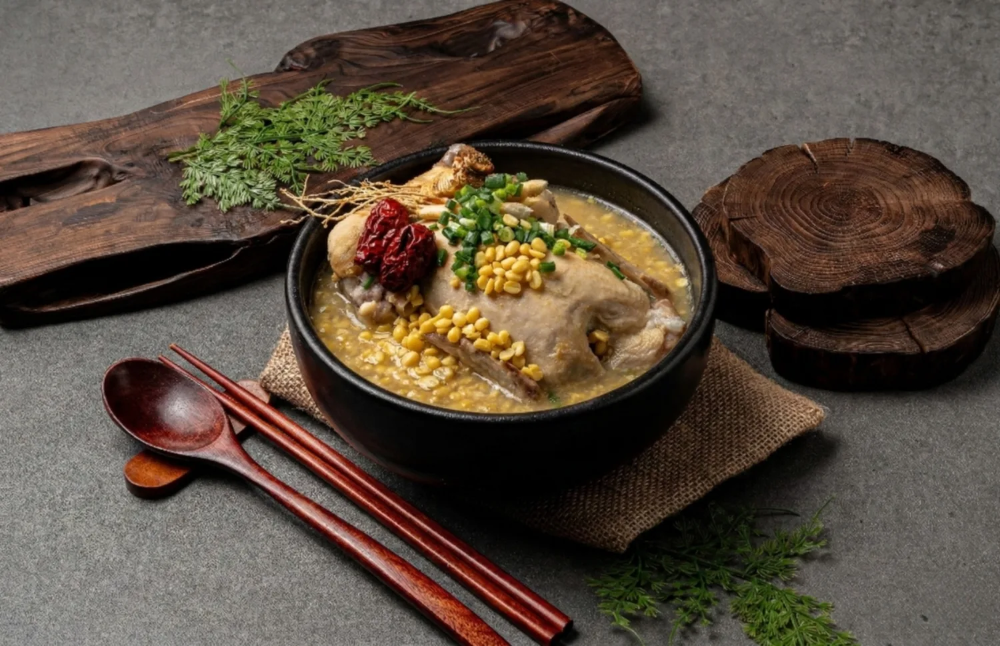
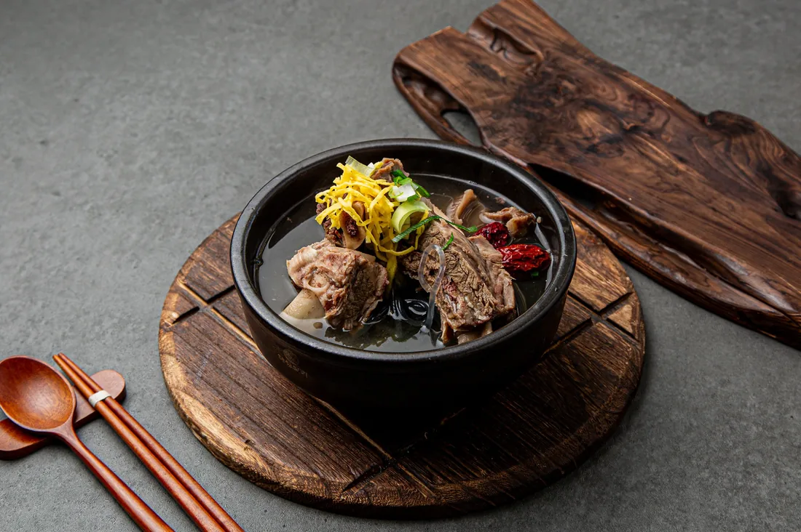
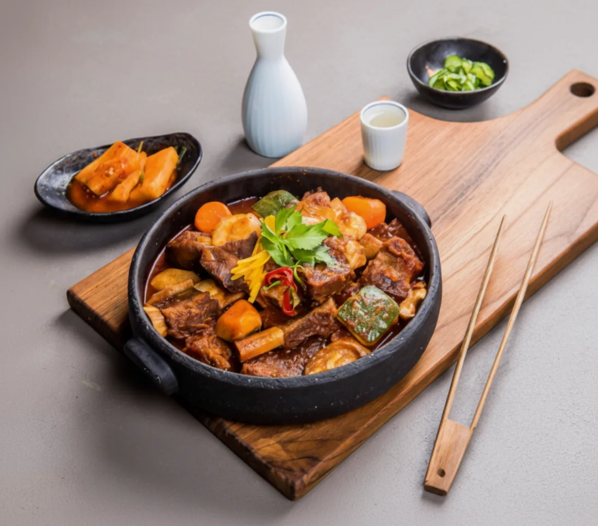
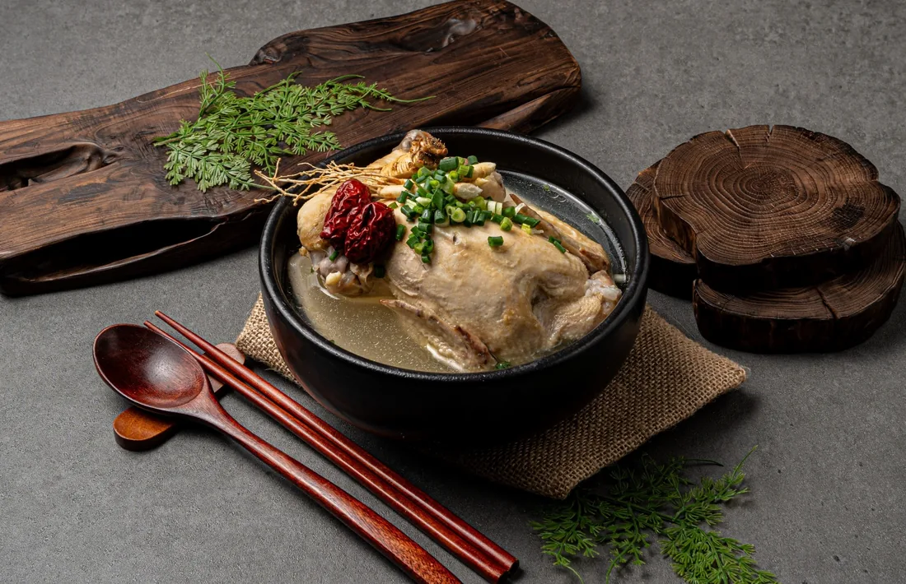
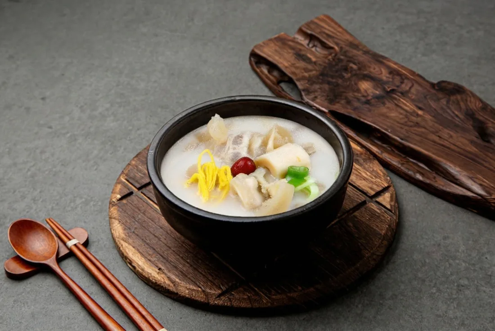

복날 대목
녹두삼계탕
녹두의 고소함과 진한 국물로 여름 대목과 사계절 보양 수요를 잡습니다.
녹두삼계탕은 복날 대목을, 갈비탕은 꾸준한 식사 수요를, 갈비찜은 고단가 매출을 잡습니다.
고려녹두삼계탕 갈비찜은 건강식·식사·고단가 메뉴를 함께 구성해 계절별 매출 공백을 줄이는 한식 보양식 브랜드입니다.

녹두의 고소함과 진한 국물로 여름 대목과 사계절 보양 수요를 잡습니다.

남녀노소 부담 없이 찾는 안정적인 식사 메뉴로 점심·저녁 주문을 만듭니다.

가족 주문과 저녁 배달 수요를 잡아 객단가 상승에 강한 프리미엄 메뉴입니다.

신규창업부터 업종변경까지 매장 상황에 맞춰 시작할 수 있도록 설계했습니다.
처음 시작하는 사장님도, 기존 매장을 바꾸는 사장님도 가능한 운영 모델을 제안합니다.
전문 주방장 없이도 일정한 맛을 구현할 수 있도록 조리 부담을 줄였습니다.
임대료 부담이 큰 A급 상권이 아니어도 메뉴 경쟁력과 배달 세팅으로 승부합니다.
본사의 세팅과 관리가 함께 가야 오픈 초반 주문과 재주문을 만들 수 있습니다.
객단가를 유지하면서 주문 전환율을 높이는 즉시할인과 세트 구성을 제안합니다.
초복·중복·말복 시즌 사전 발주, 노출, 쿠폰, 리뷰 이벤트까지 함께 준비합니다.
배민, 쿠팡이츠, 요기요에 맞는 메뉴명, 대표 이미지, 설명문구 구성을 지원합니다.

신규창업·업종변경 상황에 맞게 상담합니다.
지역, 매장 형태, 배달 가능성을 함께 확인합니다.
삼계탕·갈비탕·갈비찜 중심으로 맞춤 구성을 만듭니다.
교육, 배달앱 세팅, 광고, 리뷰 관리까지 지원합니다.
신규창업, 업종변경, 샵인샵 창업까지 현재 상황에 맞는 창업 방향을 상담해드립니다.
아래 신청폼을 작성하시면 담당자가 확인 후 연락드립니다. 전화 또는 이메일로도 바로 문의하실 수 있습니다.